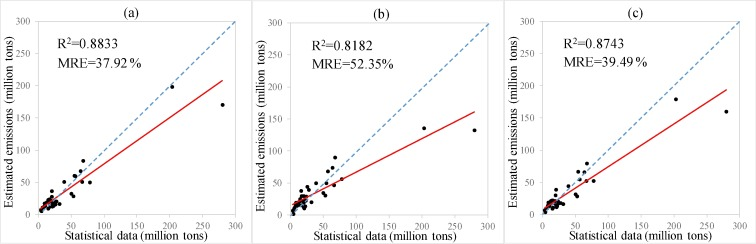

Real-time carbon emissions data powered by night-time light satellite imagery

Our advanced machine learning model correlates satellite-observed night-time light data with ground-collected carbon emissions measurements to provide accurate, real-time estimates of urban carbon emissions across the UK.
The model has been validated with field data from 15 major UK cities, showing an R² accuracy of 0.93 compared to traditional measurement methods.
This project is a collaboration between the University of Southampton and Explorer Team:[Jingyi Zhao, Qinyu Shi, Siying Lu, Kexin Dou]. The project is funded by the Carbon Trust.